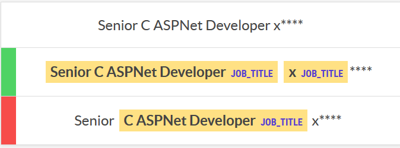
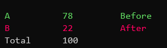

Active NER with Prodigy Teach
Active learning reduces the number of annotations you have to make by selecting for annotation the items that will have the biggest impact on model retraining. Active learning for NER is built into Prodigy, but I failed to use to it to improve my job title recogniser.
Having built a reasonable NER model for recognising job titles I wanted to see if I could easily improve it with Protidy’s active learning. So I ran the ner.teach recipe, annotating the label job_title excluding the examples I already annotated (in the dataset job_titles), creating a new dataset called job_titles_1 using the model ./job_titles/ on the sample texts sample.jsonl.
prodigy ner.teach \
-l job_title \
-e job_titles \
job_titles_1 \
./job_titles/ \
sample.jsonlIt then presented many example annotations showing the model confidence and asked me to reject or accept them. This binary system was a lot quicker than manual annotation, and put me in a different mindset for evaluation. It showed a score of model confidence and seemed to focus on where the model was most confident (near 1.0), uncertain (near 0.5) and least confidence (near 0.0). Some of the least confident ones were tedious to annotate as it would highlight things that seemed ridiculous like punctuation (but maybe that really helps train the model?). After I’d done around 700 annotations I tried retraining the existing annotations, with a 20% evaluation set to product a output model ./job_titles_1:
prodigy ner.batch-train \
-l job_title \
-es 0.2 \
job_titles_1 \
./job_titles/ \
-o ./job_titles_1/While it gives me an apparent accuracy score of 91%, but this is based on the non-representative examples from active learning so I don’t know how much to trust it. I could evaluate it on the same set I trained the original model on (by passing -e job_titles above, which gives an apparent 83%), but this isn’t a fair evaluation because it contains examples it was trained on (unfortunately prodigy doesn’t have an easy way to split out the same evaluation set used in training). Ideally I would create a separate gold set, but instead I used prodigy to do a quick A/B evaluation between the models on a new dataset samples2.jsonl:
prodigy ner.eval-ab \
-l job_title \
job_title_eval \
./job_titles/ \
./job_titles_1/ \
./sample2.jsonlIt was very easy for me to assess which result was closer.

After annoting 100 images I got a pretty clear result: I preferred the old models results 78 times out of 100.

Of course this doesn’t mean that Prodigy’s active learning was bad. Maybe I retrained at too high a learning rate and lost too much of the original model weights. Or maybe my annotations drifted too much between the interfaces (or didn’t fit the underlying model well), and so made the result further from what I was trying to achieve.
One bad thing about A/B tests is the cost scales at least linearly with the number of models; for hyperparameter tuning it’s much better to use a gold set.